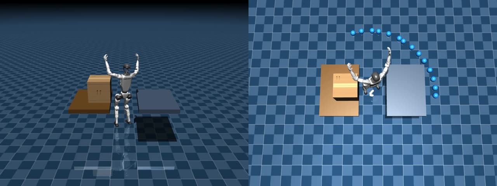

Ruijie Yin
殷瑞杰
M.Sc. Student, Nanyang Technological University
I am currently an M.Sc. student in Computer Control & Automation at the School of Electrical and Electronic Engineering, Nanyang Technological University. My research focuses on reinforcement learning algorithms, neural policy architecture and optimization, and whole-body robot control, with current work on structure-aware policy design, coordinated humanoid control, and Sim-to-Real deployment.


Multi-Skill Whole-Body Control on Unitree G1
Reinforcement-learning-based whole-body control supporting walking, squatting, dual-arm reaching, and single-arm reaching. The project includes multi-skill switching, MuJoCo Sim-to-Sim validation, and closed-loop deployment on the Unitree G1.

Symmetry-Aware GNN Whole-Body Control
Structure-aware policy learning that encodes humanoid kinematic topology and left-right symmetry, combined with upper/lower-body decoupling for fine-grained loco-manipulation. Current demonstrations include box carrying and symmetric turning in simulation.
PROJECT 01
Multi-Skill Whole-Body Control
Simulation and real-robot demonstrations of policy switching and reaching.
01
Policy Switching
Simulation: Squatting → Walking → Reaching. Hardware: Squatting ↔ Walking.
SimulationSquatting → Walking → Reaching
Real RobotSquatting ↔ Walking
02
Independent Reaching
Reaching is demonstrated independently in simulation and on hardware.
SimulationReaching policy
Real RobotReaching policy
PROJECT 02
Symmetry-Aware GNN Control & Upper/Lower-Body Decoupling
Current simulation demonstrations for coordinated manipulation and symmetry-aware turning.
01
Box Transfer in Simulation
Coordinated box grasping, carrying, and transfer.
SimulationBox grasping, carrying and transfer
02
Symmetry During Box Carrying
One video contains both left- and right-turning behavior; blue and yellow points visualize the trajectories.
Box-Carrying TurningBlue / yellow trajectory visualization
03
Left / Right Circular Turning
A continuous mirrored two-loop trajectory for qualitative symmetry evaluation.
Symmetric TurningLeft / right circular trajectory
GNN vs. MLP Comparison
Controlled comparison experiments for symmetry generalization and sample efficiency.
Real-Robot Box Carrying
Transferring the current box-carrying behavior from simulation to the physical Unitree G1.
Robust Whole-Body Control
Improving stability under upper-body motion, external loads, and disturbances.